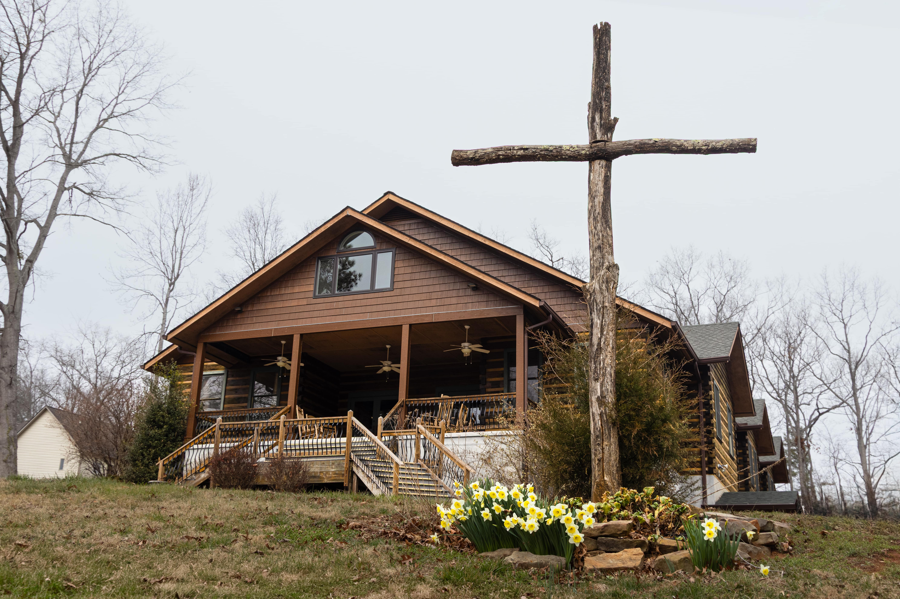
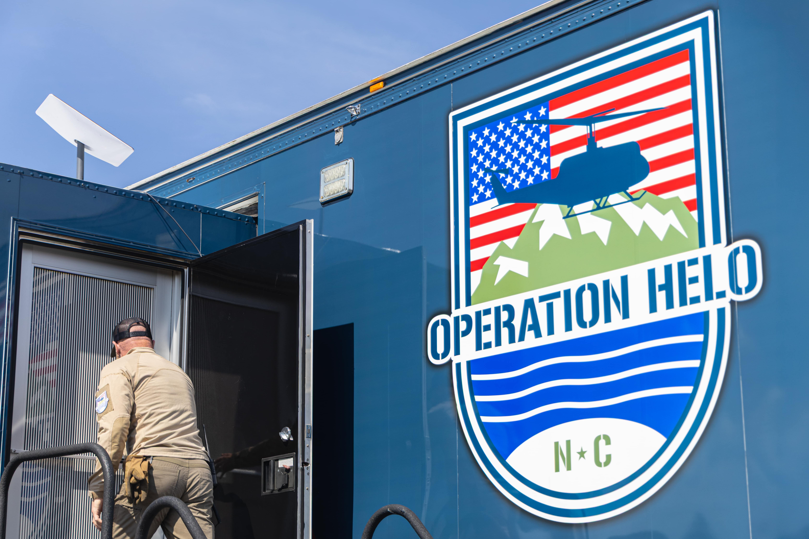

Blindsided by the Storm
This piece is centered around preparing for a storm, so I created a storm. Flooding was the issue, so I added water sounds to create a water-flowing-through-a-storm-drain vibe. Lastly, I added an interesting anecdote from Corey Davis, a state climatologist.

Uprooted
I wanted to find a song that spoke in a metaphorical way. “Make Me a Bed,” by Cisco Houston, has nothing and everything to do with a housing crisis. This song brings light-heartedness and also highlights the desperate need for change.

A Fractured FEMA
I wanted to capture the feeling of people waiting for FEMA to help. One night while I was downtown, I heard local musician Jacob Therrien’s mournful rendition of “A Change Gonna Come.” it was packed with soul and emotion.

Lost and Found
The journey begins on the open road with cars passing by, then transitions into "Swannanoa Tunnel" by Bascom Lamar Lunsford — a song full of Asheville references that expresses the warmth of home.

Faith Following the Flood
Capturing both inside and outside a church, the bells that open this track were recorded in downtown Asheville. "Holy Ground" by Frances Blalock Denton fades in — chosen for its deep bluegrass roots.

HAM Radio
Mimicking the feel of flipping through a radio, this piece weaves music from Frances Blalock Denton and Elizabeth McCorvey between static and clicks — all recorded from an actual ham radio.

Title TBD
"Have I Helped Someone Today?" by Frances Blalock Denton speaks about humanity, self-examination and what can be done for those who need us most.

Wildlife
Kept as natural as possible — it felt wrong to distort sounds that nature has already been asked to endure. Close your eyes and take a walk through the woods of Western North Carolina.

Title TBD
The bustling sounds of a post office — conversations layered over one another — reveal that the post office is an extension of community. Its loss is everybody's loss.

Operation Helo
Focusing on nonprofits that formed to help during the storm, this piece travels three ways: on the ground, on the road and in the air.